Ce este Maharishi Sthapatya Veda (MSV)?
Ce este Maharishi Sthapatya Veda (MSV)?
Maharishi Sthapatya Veda este cel mai vechi și complet sistem de arhitectură și urbanism in armonie cu legile naturii, ținând cont de influențele solare, lunare și planetare, având ca referințe Polul Nord, Sud și Ecuatorul, conectând astfel Viața Individului cu Viața Cosmică, Inteligența Individuală cu Inteligența Cosmică, astfel încât, oriunde am fi, sa simițim ca și cum am trăi în Paradis.
ORIGINEA MSV
ORIGINEA MSV
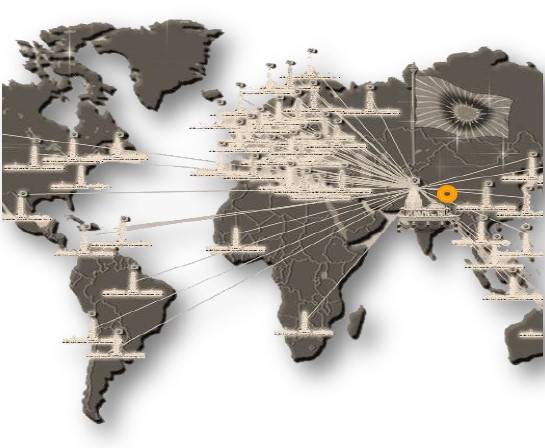
Provenind din cultura vedică, Sthapatya Veda împărtășește rădăcinile culturale și principiile filozofice cu Yoga, Astrologia Vedică (Jyotish) și Ayurveda.
Această știință a fost practicată de multe dintre culturile antice ale lumii, inclusiv: Egipt, America de Sud, Africa, China, Renașterea Europei și Anglia.
Vastu este un sistem holistic de design spațial care a avut originea în India în urmă cu peste 6.000 de ani. În timp ce multe științe antice se concentrează în principal pe crearea de echilibru în mintea și corpul tău, Vastu extinde acest proces la mediul în care trăim.
În acest fel, casa devine o structură care să susțină beneficiile obținute prin practicarea acestor discipline.
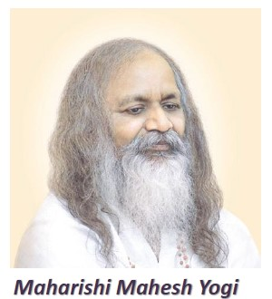
Maharishi Mahesh Yogi (https://en.wikipedia.org/wiki/Maharishi_Mahesh_Yogi) este cel care a filtrat informația fragmentată ce a supravietuit pana azi, a unificat și a ”restaurat” Arhitectura Vastu către ”Întregul” ei original. Maharishi este cel care a introdus lumii Meditația Transcendentală, în anii 1950, deschizând porțile iluminării către milioane de oameni.
Acesta spunea despre MSV următoarele: “Deoarece Individul este Cosmic, tot ce ține de viața individuală ar trebui să fie în armonie completă cu Viața Cosmică Maharishi Sthapatya Veda aduce dimensiuni, formule și orientare clădirilor, instaurând armonia cosmică și suținerea necesară pt ca individualitatea să trăiască pacea, prosperitatea și sănătatea.”
TERMENI DES FOLOSIȚI ÎN DESCRIEREA MSV:
TERMENI DES FOLOSIȚI ÎN DESCRIEREA MSV:
Inainte de a incepe descrierea elementelor definitorii principale, ar fi indicat sa lamurim cativa termeni ce apar des în descrierile MSV.
Arhitectura vedică Sthapatya Veda– mai este numită și Vastu.
Vastu (tehnolgia de a structura) este în esență acel echilibru, acea coerență ce susține funcționarea tuturor structurilor Universului.
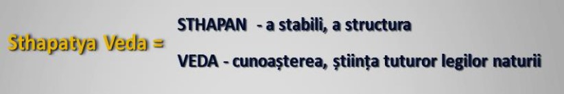
Sthapatya Veda (în limba sanscrită) se poate traduce drept știința, cunoașterea (Veda) de a stabili (Sthapan).
Ea se mai numește și Vastu Vidya sau Vastu Shastra.
Legile Naturii sunt principiile existente în natură ce guvernează întregul nostru Univers, sau altfel spus inteligența naturii.
ELEMENTELE CE DEFINESC MSV:
ELEMENTELE CE DEFINESC MSV:
MSV definește principiile de bază universale care sunt implementate în planificarea și construcția unei clădiri. În structura clădirii unei case Vastu sunt ancorate aceleași legi cosmice care organizează Universul, Pământul sau Omul. Drept urmare, rezidenții, angajații, clienții și vizitatorii unei clădiri construite pe principiile unversale Vastu nu vor experimenta decât influențe dădătoare de viață. Dacă ar fi să identifcăm elementele cele mai importante ce constituie bazele MSV, atunci acestea ar fi încadrate în 8 mari categorii, după cum urmează:
1. Orientarea construcţiei (Est sau Nord)
1. Orientarea construcţiei (Est sau Nord)
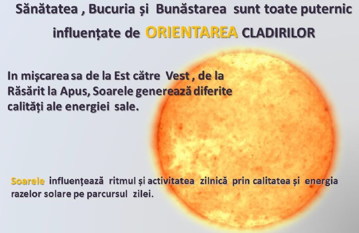
ORIENTAREA UMANĂ:
ORIENTAREA UMANĂ:
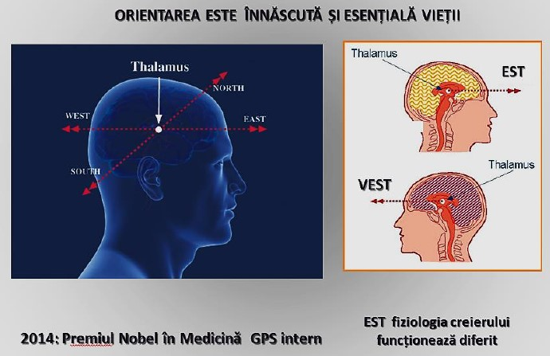
Orientarea noastră este esențială, Soarele (mai ales Răsăritul) jucând un rol principal în desfășurarea activităților noastre in ciclul zi/noapte. În 2014 a fost acordat Premiul Nobel în Medicină pentru descoperirea celulelor care constituie un sistem de pozitionare in creier, descris drept un "GPS intern".
În creier există bilioane de mici magneți (magnetiți) care il fac sensibil la orientare.
John O'Keefe (University College London), May-Britt Moser (Center for Neural Computation în Trondheim) şi Edvard Moser (Kavli-Institut Trondheim) sunt recompensaţi cu Premiul Nobel pentru cercetări asupra celulelor care creează un sistem de poziţionare în creier - a anunţat Comitetul Nobel de la Stockholm.
Descoperirile celor trei laureaţi din acest an explică modul în care creierul îşi trasează o hartă a spaţiului înconjurător, respectiv cum reuşim să ne orientăm într-un spaţiu complex.
ORIENTAREA CLĂDIRILOR
ORIENTAREA CLĂDIRILOR
La fel ca în cazul oamenilor, aceleași principii se regăsesc și la nivelul construcțiilor ce susțin activitatea și odihna acestora. Astfel, o clădire poate vibra și produce diferite reacții asupra corpului uman, in funcție de modul în care este orientată.
Traditia vedica afirma ca poziția unei clădiri ar trebui aliniata cu directiile cardinale, modul in care aceasta se orienteaza aducand Influențe de bun augur sau nefaste corelate cu modul in care intrarea este indreptata spre Soare.
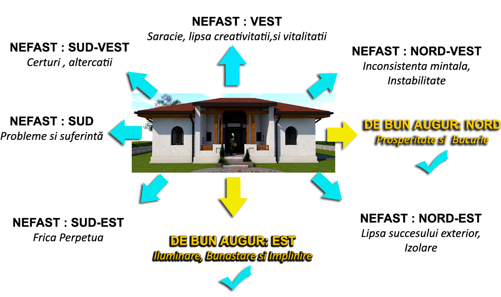
2.Delimitarea Vastu
2.Delimitarea Vastu
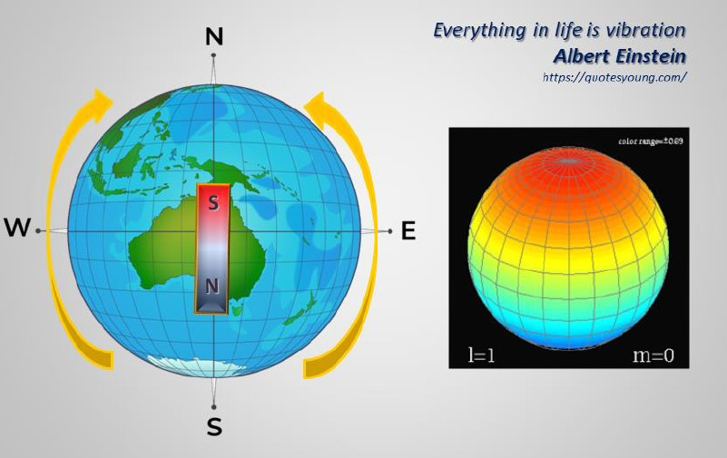
PAMANTUL este o planeta si ca orice sfera cereasca acesta pulseaza subtil, la scara planetara, prin tipare vibrationale numite armoniii sferice ( in astrofizica se mai numesc unde stationare).Tiparele vibraționale ale Pamantului arată ca niste valuri oscilatorii permanente de la N la S si del a E la V,care genereaza un model de grilă - PRECUM ALATURAT - ce coincide cu sistemul de coordonate geografice (latitudine si longitudine).
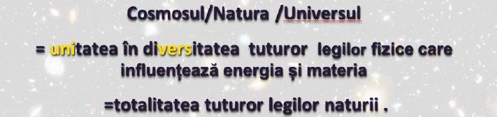
Aceasta retea devine campul de baza la care ne raportam cand amplasam constructiile, avand grija sa ne armonizam cu aceste unde vibrationale.Armoniile sferice ale Pământului generează un pattern de unde staționare zonale, teserale si sectoriale (sursă: studiile efectuate în domeniul geofizicii și astrofizicii).
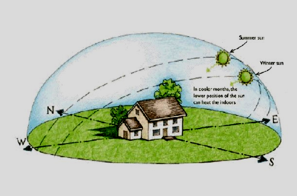
Când o clădire este aliniată cu direcțiile cardinale, va acționa ca un rezonator subtil așezat pe rețeaua Câmpului Unificat, fiind astfel acordată total cu Rețeaua Pământului.
Rețeaua energetică a planetei Pământ poate fi percepută ca o rețea care leagă Pământul cu totul = influențată de multe variabile precum electricitate, magnetism, căldură, sunet, lumină, culoare și materie.
Rețeaua energetică a Pământului funcționează prin tipare geometrice specifice care urmează anumite simetrii.
Rețelele se întâlnesc în multe puncte de intersecție creând o matrice care este foarte asemănătoare cu punctele de acupunctură ale corpului energetic uman.
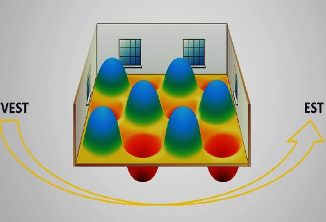
Se crede că solidele platonice, inclusiv cubul, tetraedrul, octaedrul, dodecaedrul și icosaedrele sunt modelele geometrice evoluate derivate din studiul rețelelor geometrice ale Pământului
Prin urmare, amprenta cladirii e indicat sa se alinieze cu patternul pamantului, avand grija ca elementele structurale sa nu fie suprapuse peste punctele de intersectie ale grilei vibrationale.
Fiecare clădire este un rezonator (are propria vibratie ) și ar trebui să intre în armonie cu câmpul de bază (undele staționare ale Pamantului).
Rezonanța unei clădiri Vastu(ca un instrument bine calibrat) este resimțită de rezidenții ei prin bunăstare, sănătate, fericire și relații familiale armonioase.
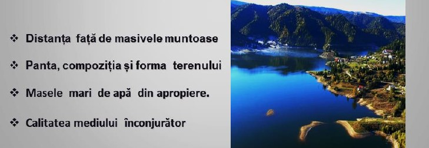
Adițional amplasării construcțiilor orientate cardinal pe rețeaua undelor staționare, influențe majore vin de la terenul /relieful pe care se amplaseaza constructia:
3. Orientarea spaţiilor interioare
3. Orientarea spaţiilor interioare
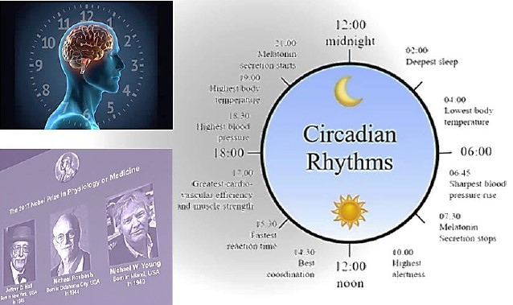
In 2017, Michael Young,Jeffrey C. Hall și Michael Rossbash au fost onorați cu Premiul Nobel pt Medicină, pentru studiul acestora privind mecanismele moleculare care controlează ritmul circadian uman.
Ceasul nostru biologic este strâns legat de ciclul ZI(Soare) /Noapte și reglează cantitatea de melatonină, cortizol și căldură corporală,necesare funcționării optime.
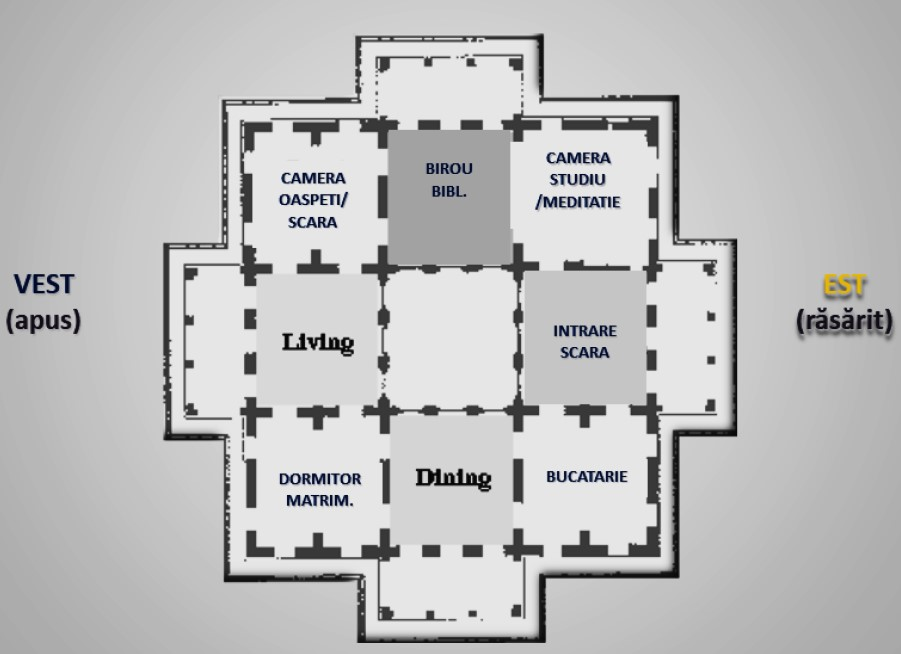
Așa cum corpul uman reacționează la diferitele energii ale Soarelui pe parcursul ciclului Zi /Noapte, la fel, casa ar trebui construită astfel încât diferitele energii ale soarelui să corespundă cu diferitele funcțiuni și activități din fiecare încăpere.
Pentru a avea suportul Legilor Naturii, fiecare cameră are o poziție determinată în clădire și o funcțiune corespunzătoare calității solare.
4.Proporții şi dimensiuni speciale
4.Proporții şi dimensiuni speciale
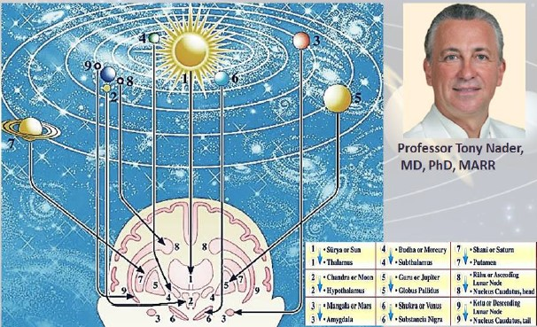
In Stiinta Vedica, legile naturii se regasesc in toate tipurile de structuri, mai ales in corpul uman.În lucrarea sa ”Human Physiology: Expression of Veda and the Vedic literature” Dr. Tony Nader, neurolog și expert în ayurveda a descoperit o corespondență precisă de 1 la 1 între fiziologia componentelor creierului și echivalentul Cosmic al acestora (în structura și funcțiunea universală)
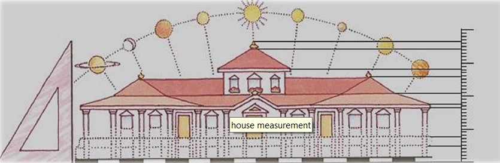
Aceasta corespondenta la nivel individual se extinde si la nivelul unei cladiri, sau chiar mai departe. De asemenea, fiecare spatiu interior este guvernat sau preia influentele unei anumite planete din sistemul nostru solar.Atunci când o structura este proiectată, se vor calcula precis toate proporțiile fiecărei camere (conform unor formule speciale ) dar și dimensiunile exterioare, pentru a obține măsurători armonioase atât pt fiecare element în parte cât și pentru întreaga casă.
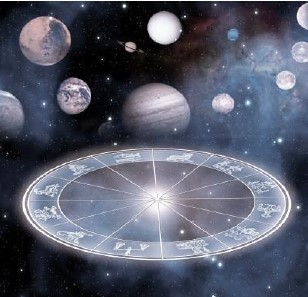
Formulele ce stau la baza construcțiilor Vastu sunt derivate din Astrologia Vedica. Ele sunt generate prin calculul Ayadi Shadvarga (sau formulele de construcție). Sistemul Ayadi este un set de calcule astro-matematice de confirmare a cifrelor rezultate din proiectul Vastu.
Ele se bazează pe diferitele cicluri ale naturii ce guvernează viața pe Pământ ( Soarele, Luna, Planetele, Constelațiile, etc).
Calcularea în relație cu poziția planetelor se transpune si in stabilirea zilelor favorabile, alese pt inaugurarea etapelor esentiale in conturarea unei cladiri.
5.Evidențierea centrului
5.Evidențierea centrului
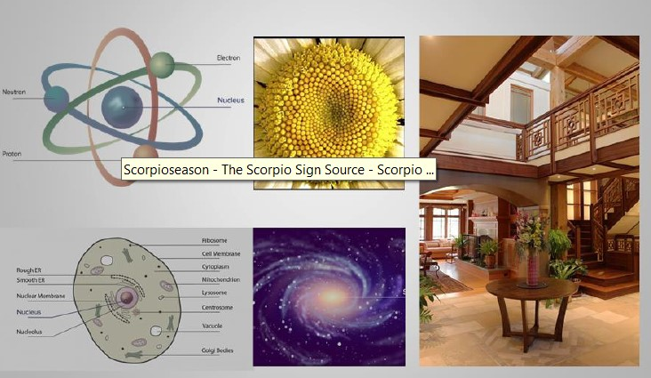
Multe structuri din natură au un nucleu tăcut de inteligență, în jurul căruia se organizeză.
În structura clădirii unei case Vastu sunt ancorate aceleași legi cosmice care organizează Universul.
Brahmasthan se poate defini drept locul unde se conectează structura ca întreg cu Intregul Legilor Naturii.
6.Cercetare științifică a beneficiilor
6.Cercetare științifică a beneficiilor
Un element cheie al arhitecturii vedice este înțelegerea sensibilităţii creierului uman la orientare, preferențial spre est - spre soarele care răsare.
Cercetătorii creierului au descoperit că neuronii creează conexiuni în creier ce oferă informații despre orientarea corpului. Mai exact, cercetarea creierului cu privire la orientare, navigație și plasare arată că neuronii trunchiului cerebral se ”aprind” diferit în funcție de direcția cu care se confruntă o persoană.
Această tendință naturală a creierului de a funcționa cu referire la direcție reflectă principiile lui Maharishi Vastu, care derivă din textele vedice. Aceste texte explică dinamica structurării creației care stă la baza tuturor valorilor individuale și cosmice și susțin ordinea în univers.
Alăturat, dr.phD Fred Travis, unul din cercetătorii care au descoperit legătura dintre orientare și creierul uman, incluzând în ecuație și starea contemplativă interioară(meditația profundă).
Dr. Travis este profesor de știință Maharishi Vedic University, președinte al Departamentului de știință MVU, decan al școlii universitare și director al Centrului pentru creier, conștiință și cunoaștere. A obținut un Master și un doctorat în psihologie de la Maharishi University of Management și un BS în proiectare și analiză de mediu de la Universitatea Cornell.
Lista extinsă a multelor cercetări în domeniu Vastu se poate accesa alăturat: https://www.maharishivastu.org/pdf/full_summary_of_scientific_research.pdf
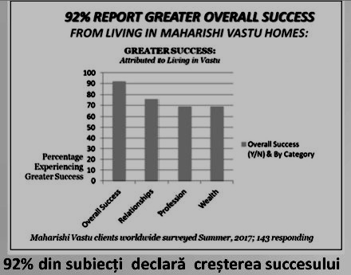
Cercetarea efectuată, în august 2017 de către prof. Sanford Nidich și Jeffrey Abramson, la M.U.M., S.U.A - a avut ca subiecți toți proprietarii certificați de case Vastu din toată lumea (160 adulți).Acesta a publicat o cercetare pe scară largă privind traiul în construcții clădite pe principiile arhitecturii Vedice, așa că a trimis un sondaj cuprinzător de măsurare a calității vieții către câteva sute de oameni din întreaga lume care locuiesc în locuințele Maharishi Vastu. Rezultatele sondajului sunt puternice; dau o mare credință predicției lui Maharishi conform căreia trăirea în aceste case ar crea o influență a sănătății bune, a fericirii, a armoniei familiale și a creșterii spre iluminare. Ele demonstrează eficacitatea unică a renașterii de către Maharishi a principiilor vedice ale lui Vastu.
Rezultatele chestionarelor se pot se pot observa alăturat.
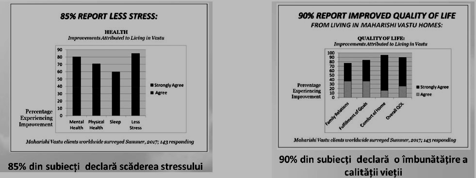
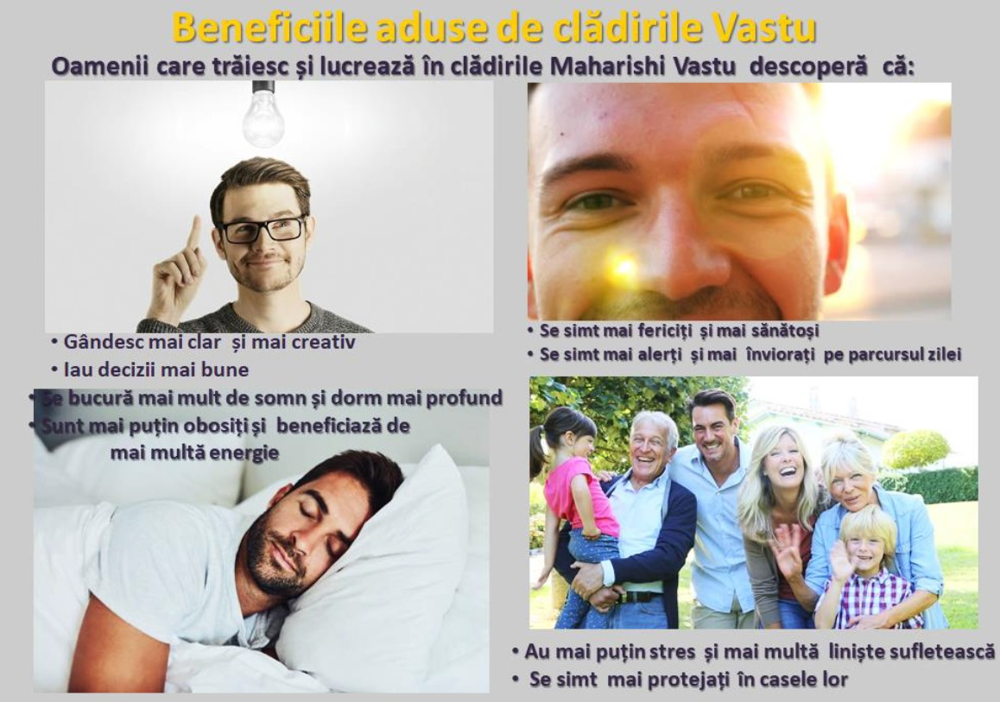
Protecția la dezastre naturale
Protecția la dezastre naturale
Exemplu: Uraganele Rita și Gustav: experiențe la Houston, Texas Peace Palace
Articol publicat de Sue Weller, Houston, Texas, SUA, octombrie 2008
În 2005, imediat după lovirea uraganului Rita (cel de-al patrulea cel mai intens uragan atlantic înregistrat vreodată), zona din afara gardului Vastu al Palatului Păcii a fost umplută cu copaci și membre ale copacilor, care se aflau peste tot. În interiorul delimitării Vastu era curat, de parcă cineva ar fi luat o suflantă de frunze și l-ar fi curățat. Exact același lucru s-a întâmplat trei ani mai târziu după lovirea uraganului Gustav. Un vizitator care a venit imediat după acel uragan pentru a inspecta site-ul pentru daune chiar a întrebat dacă cineva tocmai a venit să facă curățenie în curte, deoarece curtea era atât de imaculată.
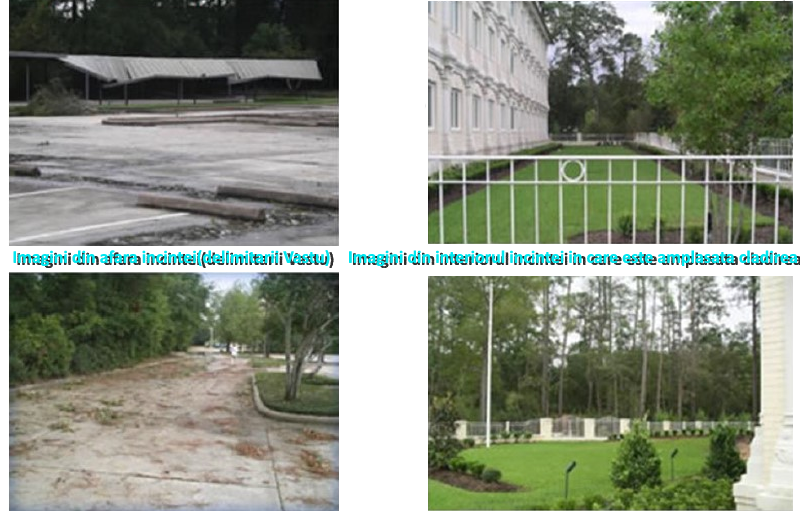
7. Sustenabilitate ( materiale naturale/non–toxice, tradiția și resursele locale, etc)
7. Sustenabilitate ( materiale naturale/non–toxice, tradiția și resursele locale, etc)
Clădirile sustenabile
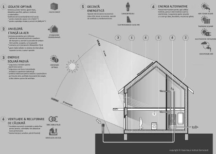
O casă sustenabilă va conţine toate elementele din zona caselor verzi și a caselor pasive, dar și o proiectare de înalt nivel tehnologic.Casa sustenabilă este casa viitorului, deci și casele Vastu vor utiliza practicile sustenabile, ecologice sau verzi in tehnologia lor de construire.
O clădire sustenabilă trebuie să fie confortabilă și dotată cu o tehnologie prietenoasă pentru cel care o folosește.
Materialele naturale și tehnologiile de construire tradiționale sunt elemente e bază ale construirii clădirilor in armonie cu mediul înconjurător și cu natura universală.
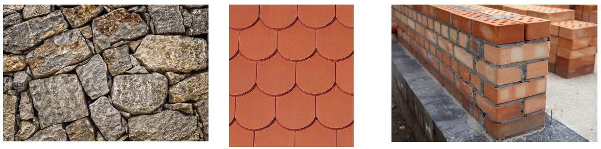
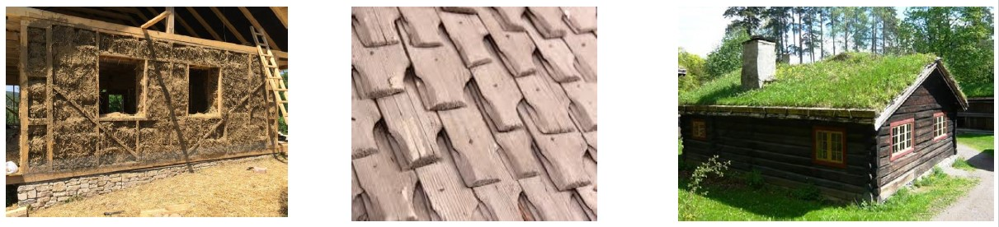
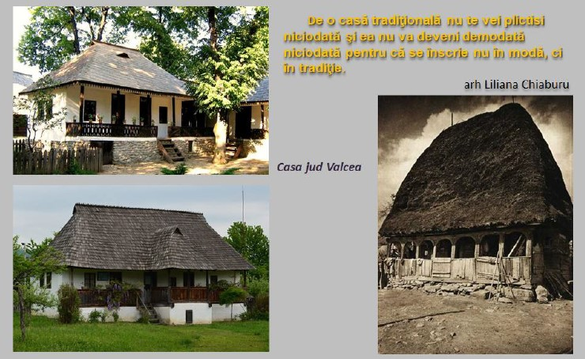
Respectul si armonizarea pt mediul inconjurator se poate inspira din experienta trainica a traditiei locale.Ca si ARHITECTURA VASTU sau CLADIRILE VERZI, arhitectura tradițională e integrată în peisaj, e adaptată la mediu și utilizează materiale naturale locale.
PRINCIPIUL CASELOR ECOLOGICE ARE RADACINI PUTERNICE IN TRADITIE.
Arhitectura romaneasca traditionala respecta natural prin traditia sa culturala principiul fundamental al orientarii de tip VASTU.
Asa cum trecutul este baza experientei noastre, la fel si traditia ar trebui sa ne fie sursa de inspiratie pt a cladi in armonie cu natura.
Nu trebuie sa preluam modelul exact, ci sa extragem din cladirile vechi autentice - obiceiurile sanatoase si modul de trai integrat cu mediul inconjurator.
8.Resurse regenerabile și tehnologii ecologice
8.Resurse regenerabile și tehnologii ecologice
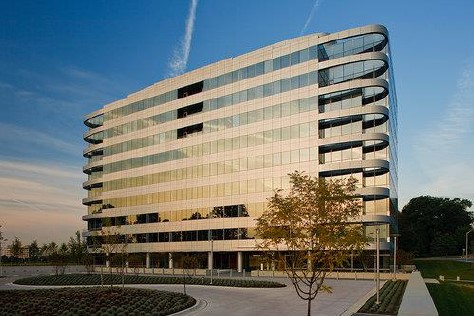
2000 Tower Oaks Boulevard este cea mai mare clădire de birouri din lume, proiectată în conformitate cu principiile arhitecturii MSV, precum și cu tehnologii verzi extinse.
Clădirea, deținută de The Tower Companies și Lerner Enterprises, a obținut certificarea LEED Platinum.
De asemenea, este prima clădire din statul Maryland care a obținut denumirea EPA „Design to Earn the ENERGY STAR”
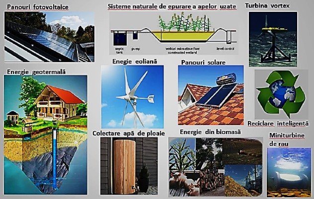
Energia din surse regenerabile este energia produsă din surse nefosile regenerabile care, considerate la o scară de timp umană, se refac în mod natural. Atât producția, cât și consumul de energie din surse regenerabile sunt în creștere în UE, dar este necesară continuarea eforturilor dacă se dorește îndeplinirea obiectivelor UE privind energia din surse regenerabile fixate, și anume ca ponderea acestui tip de energie în consumul final să ajungă la 20 % până în 2020 și la cel puțin 27 % până în 2030.
Sursa: https://op.europa.eu/webpub/eca/special-reports/renevable-energy-5-2018/ro/